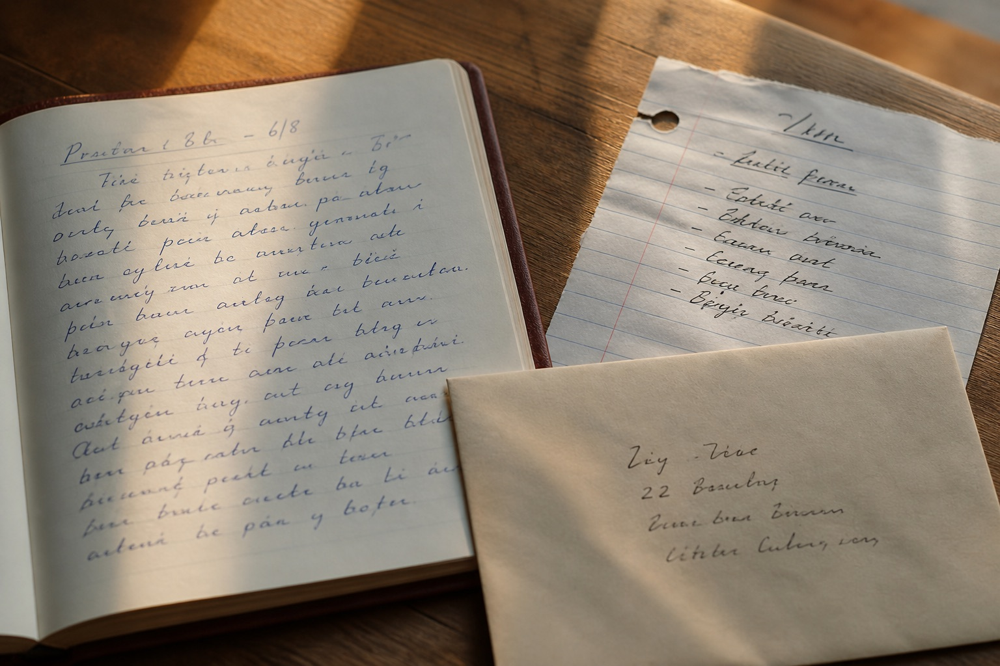

模仿笔迹怎样选择自然手写样本？从整页文字到细节照片
准备模仿笔迹资料时，很多人会先挑字写得最工整的一页。实际查看样本，更重要的是它能不能反映平时的书写状态。日常便笺、会议记录和连续手写内容，往往比临时誊写的一张字更有参考价值。

自然手写样本为什么更重要
模仿笔迹不是把单个字逐一拼在一起。整段文字中的速度、字距、行距和大小变化，共同构成一个人的书写习惯。刻意放慢速度抄写的样本虽然清楚，却可能失去平时的连笔和转折。选择材料时，应优先保留自然形成、书写时间明确的内容。
整页文字与局部照片各有什么作用
整页照片可以看到版面布局、行距和段落走势，局部照片则用来观察起笔、收笔、折笔和墨色细节。两类图片不能互相代替。建议先拍完整页面，再对目标文字中反复出现的字、数字和签名位置补拍近照，并使用相同编号保存。
重复字和相似结构怎样查找
目标内容确定后，可以先列出其中出现频率较高的字，再到样本中寻找相同字。找不到完全相同的字时，也可以记录偏旁、笔画组合或相近结构。这个步骤能提前发现材料缺口，避免模仿笔迹工作开始后才反复补充样本。
不同时间的笔迹要不要混在一起
人的书写会随工具、姿势、速度和阶段发生变化。跨时期材料应按年份或月份分组，不要直接混成一个文件夹。先确定主要参考时期，再用其他样本观察哪些特征长期稳定，这样更容易理解正常变化。
提交目标文字时还要说明什么
除了最终文字，还应写清纸张尺寸、预计页数、行数、落款位置和交付格式。如果内容含有英文、数字或特殊符号，也要单独标注。版式要求越明确，模仿笔迹的前期判断越准确。
四类关键词之间有什么联系
模仿笔迹关注连续文字与整体书写习惯，模仿签名和模仿签字更重视固定文字中的连笔、速度和结构变化，笔迹鉴定则需要把待分析文件与自然对比样本分开观察。理解这些差别，才能按具体需求准备合适材料，而不是把所有图片混在一起。
常见问题
模仿笔迹资料只有手机照片可以先看吗？
可以先查看，但照片应保留完整页面、光线均匀且未经压缩；找到更清楚的扫描件或原件后再补充。
不同时间形成的样本可以放在一起吗？
可以同时提供，但应先按时间分组，并明确主要参考时期，避免不同阶段的书写变化相互混淆。
样本越多越好吗？
数量重要，分类和清晰度同样重要。多份来源明确、自然形成且内容可比较的样本更有参考价值。